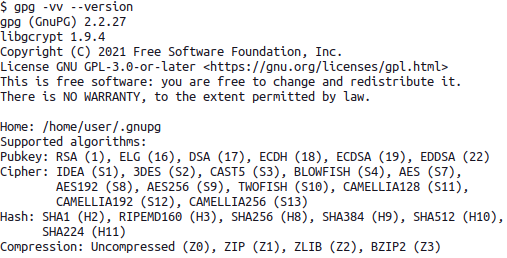
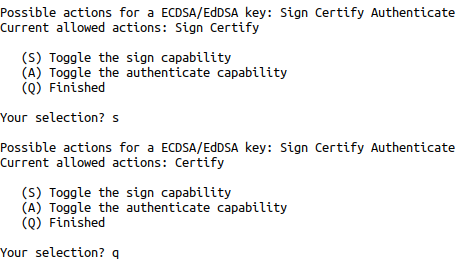
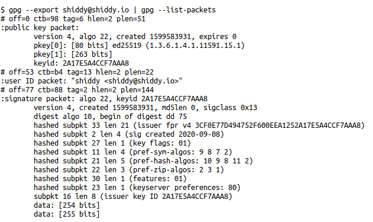
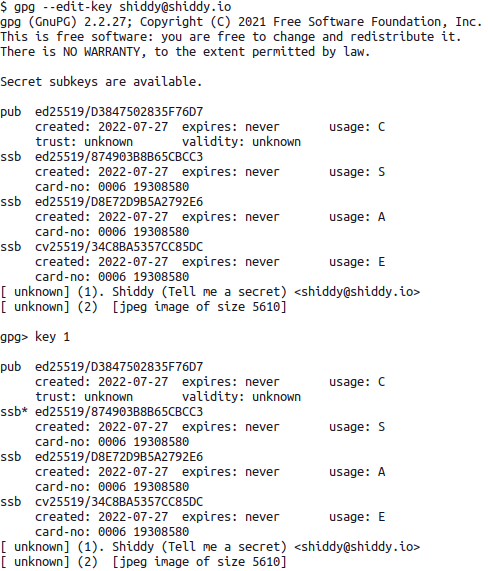
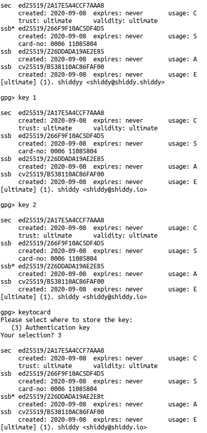
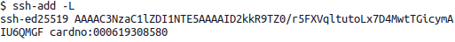

GPG & Hardware Tokens

TL;DR
- Preamble
- Requirements
- Configuration
- Our GPG key structure
- Creating the Master Cert Key
- Master Key Revocation
- Subkey Generation
- Exporting our keys
- Writing our Keys to a Yubikey
- GPG Private Key Cleanup
- Publishing our Public GPG keys
- Setting our SSH agent use our GPG keys
- Adding our public key to various authorized keys
- Setting touch behavior for Yubikey Subkeys
- Setting pin retries for Yubikey
- Setting pins for your Smart Card
- Enabling/Disabling Yubikey features
Preamble
Every time I set up a new computer there is a fair amount of time spent on getting various configs into a state I am comfortable with. Unfortunately, I don't have a means to automatically set up hardware tokens for authing into some machines so I often have to spend a day just looking up all the various commands and parameters. This post aims to make that process easier for me in the future, but also hopefully save you some time on your next GPG key setup.
I also am using the Yubikey 5 because it supports the GPG 3.4 Smart Card spec. Allowing us to write elliptic curve keypairs to the device. If you have a yubikey 4 or lower you will have to use RSA as your algorithm for all keys in this process.
I don't claim to be a cryptography expert, and what I am posting here is to the best of my knowledge the most generic use-case friendly way to set up a hardware token. If you have improvements feel free to send me a PGP message with the details, or idk check my about page for where I am, I guess. (˵¯͒〰¯͒˵)
Requirements
We are ensuring we have three programs for the following:
- GPG - for creating and setting keys for smart-cards
- PinEntry - a utility that will pop up for our OS when we need to enter our smart card's pin
- YkMan - a program that we can use to set the pins on our Yubikey, and require a human to touch it to authenticate
For MacOS I assume that you are using homebrew or are able to get these programs from valid sources
brew install gnupg pinentry-mac ykman
For Linux I am using a Debian based package manager, but I trust you are able to find these packages with your specific distro.
sudo apt install gpg scdaemon libccid yubikey-manager
Note pinentry requires you to know what kind of desktop environment you use on linux. For Ubuntu or Debian systems you would use "gnome", and install pinentry-gnome3, etc... If you don't know I would recommend using pinentry-curses which should work with most ttys.
Configuration
We need to tell our gpg-agent what our pinentry program is as well as that we plan to use our GPG agent for ssh.
This requires some directories to exist; the easiest way to ensure they exist is to use GPG itself to create them:
gpg -k
for MacOS
if `which pinentry-curses 1>/dev/null`
then
cat << EOF
pinentry-program $(which pinentry-curses)
default-cache-ttl 3600
max-cache-ttl-ssh 3600
enable-ssh-support
verbose
log-file $(echo "$HOME/.gnupg/gpg-agent-log")
EOF
else
echo "You didn't install the requirements, you should check the pinentry-mac install step above."
fi ```
#### for Linux
```bash
echo -e "pinentry-program /usr/bin/pinentry\nenable-ssh-support" > $HOME/.gnupg/gpg-agnet.conf
Our GPG key structure
What we are working towards is a single GPG master key that certifies multiple subkeys for specific actions, namely: Authorizing, Signing, and Encrypting. When we talk about a key in this context, we are referring to a key-pair. Meaning, we will be making 8 keys in total 4 private and 4 public.
Master (Certify)
|
|--> Sub 1 (Signing)
|
|--> Sub 2 (Encrypting)
|
\--> Sub 3 (Authorizing)
I understand that there are mechanisms to run this as a batch job, however I want to walk through the steps manually first.
Creating the Master Cert Key
gpg --expert --full-generate-key --cert-digest-algo H10
*Note* The --cert-digest-algo flag allows us to specify the hashing algorithm on these keys. By default we will see SHA256, which is fine for most everyone, but since we can specify SHA512 which will be faster on our 64-bit machines, and also generally help with security by making collisions with our hash much less likely, ヾ(´￢｀)ﾉ According to the Docs we can show the algorithms used here, but only some of them map to the globals in gcrypt.h so no love on specifying whatever hash you want ¯\(ツ)/¯
*Note on note* If you are so inclined, you can print the algorithms that GPG support with the following gpg --vv --version this will show a specific identifier H10 in our case, which you can see points to SHA512.
gpg -vv --version

We select (11) ECC (set your own capabilities and we then toggle the "signing" capability with the s key. Signing is on by default, we only the certify capability on this master key.

Finally we select (Q) Finished to then specify the encryption algorithm. In our case we want (1) Curve 25519
Next, we are prompted with how long we want this cert to be valid for. I normally don't like to set limits for how long a key will be used in fear that I will lose historical data. That being said, I also limit the damage that is done if these keys are compromised by creating a revocation certificate. So, I enter a 0 and confirm with y to state that my master key will not expire.
Now we want to provide some information about who the key belongs to. I'll enter shiddy for my name and shiddy@shiddy.io for my email, and leave the comment blank. We then finalize the key creation with (O)kay.
At this point you may be prompted for a passphrase, This is different than your smart card pin, and is the only thing preventing this key from being used if someone gets access to your keyring or private key storage. Make sure to set it to something secure.
Congrats! We now will follow a similar sequence of steps to generate our Authorization, Encryption, and Signing keys.
If we want to confirm our key status at any time we can execute gpg --export shiddy@shiddy.io | gpg --list-packets On the off chance you don't know already, your email address is the identifier for your GPG key, so you will want to use your email from the previous step. Otherwise if you have one key at this point you can use the following:
gpg --export `gpg -K | grep '<' | cut -d\< -f2 | tr -d '>'` | gpg --list-packets
Note from here on out in the documentation I will only use my own key identifier. You should change this to have the same commands work on your machine.
This shows that we have generated two keys pkey[0] and pkey[1] as part of the public packet, as well as our digest algo 10 as part of the signature packet.

Master Key Revocation
Part of being a good security minded individual, is making sure that we plan for the worst. Here we will make a revocation certificate to ensure that if we lose our private keys, we can just kill everything related to this key and start over.
This is important because we set this key to never expire, if our key was compromised we have no means of informing others. That being said, we also need to make sure that this revocation certificate is as secure as our Master secret key, otherwise anyone could revoke our keys.
gpg --output shiddy\@shiddy.io.gpg-revocation-certificate --gen-revoke shiddy@shiddy.io
The above command created a file shiddy@shiddy.io.gpg-revocation-certificate which contains the revocation certificate, print it and put in in a fire-safe, slap it on a usb and put it somewhere safe but do not keep it on your hard drive
Subkey Generation
We want to create our subkeys from our master Certify key. So we will tell GPG that we want to edit this key which will drop us into a GPG prompt.
gpg --expert --edit-key --cert-digest-algo H10 shiddy@shiddy.io
We can then enter addkey to begin the creation of a new subkey.
Selecting (11) ECC (set your own capabilities) again will default to Sign as the only action, but we should confirm this and then Finalize our key selection with (Q) Finished, (1) Curve 25519 for the elliptic curve we want, that it will not expire with 0, and a confirmation of y.
Two more to go! Let's create our Authenticate key next
Invoke addkey again, (11) ECC (set your own capabilities) and this time only enabling the Authorization capability and disabling any other capabilities (S, A assuming the 'Sign' identifier is defaulted on your machine). 0 for the expiration date, and a confirmation with y.
One final addkey, (12) ECC (encrypt only), (1) Curve 25519 for the elliptic curve, Q to confirm the selection, 0 for the expiration date, and finally y to confirm.
Finally, we want to cleanly exit GPG with save.
Huzzah! We now have a bunch of public and private keys attached to our Master Key!
If we note what is returned to us here, we can see our master key set up with sec ed25519 and our Sign and Authenticate keys as ssb ed25519. However our Encryption key is a ssb cv25519 which specifies that it's going to be using an integrated encryption scheme (IES) to encrypt since the plaintext that can be encrypted in most elliptic curves is much smaller than RSA at similar bit lengths.
It's also worth pointing out that we could create any subkey with any algorithm you desire, so if you for example worked at a place where it might not be guaranteed that you can ssh with elliptic curves, then you can reasonably only create the Authorization key as a RSA4096 while keeping the other two subkey pairs as EC25519. Dig?
We can optionally add an image to this key with addphoto but it's worth noting that this is going to be stored on other people's machines. Size is therefore a concern, if/when we put this on a cert server, we don't want to make the people offering free cryptography solutions sad.
Exporting our keys
We are now ready to export our keys.
We will export our secret keys we want to backup, as well as write to our smart card. We will also export our public keys, which we can publish to external hosts.
Exporting Public Keys
gpg --export -a shiddy@shiddy.io > shiddy\@shiddy.io.pub
Exporting Private Keys
gpg --export-secret-keys -a shiddy@shiddy.io > shiddy\@shiddy.io.priv
The two export commands we ran created two files shiddy@shiddy.io.pub and shiddy@shiddy.io.priv we want to save the private file one in the same place as our shiddy@shiddy.io.gpg-revocation-certificate from before. Making sure to remove them from the hard drive after doing so.
However, we also now have our public key file. This should be super public, put it in a place where you can use it. For example, This is one of the most used files on my NAS when I need to spin up new machines, since I want to make sure that I can access them from one well-known key. I suggest you do the same, put it out there keep some copies around.
Writing our Keys to a Yubikey
Let's check that our computer is able to read the smart card data. After plugging in our card we can run gpg --card-status to see what cards are plugged in, as well as what Signing, Encryption, and Authentication keys are on the device.
If you are not starting out fresh, you can always run ykman piv reset && ykman openpgp reset
Note The ykman openpgp reset command resets your pin to '123456' and admin pin to '12345678'. We will see how those are used in the future, don't worry ( ﾟｰﾟ). It's assumed that you know your pin and admin pin. We will change it to something else later in Setting pins for your Smart Card below.
Note if you find you are getting errors like Error: Failed connecting to YubiKey ... Make sure the application has required permissions You might need to unplug and re-plug your hardware device. We are making many changes in the course of this post and sometimes it can lock after it's been updated.
gpg --edit-key shiddy@shiddy.io
Here we want to select a specific subkey with key 1. Doing so will mark the subkey with an asterisk (*). We then can send that specific key to our hardware token with keytocard.
Since our key selected earlier was our signature key we inform the smart card it's a signature key with (1) Signature Key

Tada!
We can follow this pattern for our Authentication and Encryption subkeys:
Deselect our signature key with key 1, select our Auth key with key 2, apply it to the card with keytocard, and tell the smart card it's an authentication key with (2) Authentication Key.

Finally, we can write out our Encryption key. Deselect our authentication key with key 2, select our encryption key with key 3, write it to the card with keytocard, and inform the card it's an encryption key with (3) Encryption Key.
Now we cleanly close GPG with save.
GPG Private Key Cleanup
Since we have exported our Master key to a file, and we exported our Subkeys to our hardware device, we don't need GPG to know about or store any of our keys.
We can confirm what public keys are installed with gpg -k, and we can confirm what private keys are installed with gpg -K. For now you should see both your private and public keys.
gpg --delete-secret-and-public-keys shiddy@shiddy.io
Feel free to check that all your keys are gone with gpg -K and gpg -k.
This will require a decent amount of confirming prompts, don't worry we already exported these keys. If worse comes to worse, this is a good time to fail and start over. Happens to the best of us.
We will want to import our public keys to our GPG suite since it will be able to map them to the private keys on our smart card.
gpg --import shiddy\@shiddy.io.pub
Now is a good time to confirm again what keys GPG know about, again gpg -K and gpg -k.
Let's confirm GPG knows that the public key we entered is related to the private keys on our card. We can be confirm this by running gpg --card-status | tail and seeing whether the output is similar to the following:
sec# ed25519 ...
ssb> ed25519 ...
ssb> ed25519 ...
ssb> cv25519 ...
What this tells us is that GPG has mapped some of the public keys we imported to private keys on this card. The sec# and ssb> inform us that GPG knows of a key but it does not have direct access to it. (Kinda like it's on our hardware key ৲(ᵕ3ᵕ)৴♡ )
Publishing our Public GPG keys
Public keys are public... let's publish them! One such place where we can do so is on a keyserver. Here are some of the most common ones I've seen.
http://keyserver.ubuntu.com/# http://pgp.mit.edu/ https://keyserver.pgp.com/vkd/GetWelcomeScreen.event
Setting our SSH agent use our GPG keys
I place a path variable in my .bashrc, however if you use another shell you might want to add it to it's appropriate profile/runcommand config. Note Here be monsters, I spent a good ten minutes trying to get tmux and everything else happy. I'd stick with bashrc if you have the chance. [src]
echo -e "\nexport SSH_AUTH_SOCK=\"$(gpgconf --list-dirs agent-ssh-socket)\"" >> ~/.bashrc
remember to source your new config as well source ~/.bashrc, if you don't you will have to close and re-open your terminal for the key to be in your ssh agent.
Adding our public key to various authorized keys
We can print our public authentication key with the following:
ssh-add -L

Which can then be added to any $HOME/.ssh/authorized_keys file on a server you want to access.
Setting touch behavior for Yubikey Subkeys
Here we are setting the state of the touch behavior for all our subkeys on our smart card. We have a few states to choose from.
If you would like to read more about them you can read them with ykman openpgp keys set-touch -h.
Unless you are doing any scripting where you would need to authenticate to a bunch of places over some reasonably small period of time, set your policy to Cached instead of On, and if you don't want anyone to change this policy on your smart card, you can set fixed or cached-fixed so that it can't be changed apart from a factory reset of the yubikey.
POLICY="On"
ykman openpgp keys set-touch SIG $POLICY
ykman openpgp keys set-touch AUT $POLICY
ykman openpgp keys set-touch ENC $POLICY
Setting pin retries for Yubikey
We have some extra protections with our Yubikey that are worth enabling. Yubikey will lock out a key if a user fails to enter the correct password a number of times. However if you are like me and use a keyboard without any labels, you might want to make these thresholds more lenient.
Here I am setting the number of retries for my pin to 5, the number of reset-code retries to 5 and the number of admin-pin retries to 10
ykman openpgp access set-retries 5 5 10
Setting pins for your Smart Card
Smart Cards generally have two pins, a pin for regular verification of the card owner, and an admin pin for making hardware changes to the smart card itself.
If we fail validation with the pin the number of times configured above, we have to use the administrative pin to unlock the key. If we fail to validate the admin key in the same way, we brick our key, and would have to factory reset it.
We can change these pins as well as unblock our pin with GPG, using the following command:
gpg --change-pin
If you have not modified this value yet, 123456 is the factory pin and 12345678 is the default administrative pin
Enabling/Disabling Yubikey features
If you like me are only interested in using these keys to back your GPG info, I would advise you to disable all of the yubikey features you are not using. Here is how.
Firstly we can check what kind of protocols are already configured/enabled on our device with the following:
ykman info
For my use case, it made sense for me to disable everything except PGP, which is done with the following:
ykman config nfc --disable-all
ykman config usb --disable FIDO2
ykman config usb --disable OTP
ykman config usb --disable U2F
ykman config usb --disable OATH
ykman config usb --disable HSMAUTH
ykman config usb --disable PIV
Ok. Bye
( ・_・)ノ